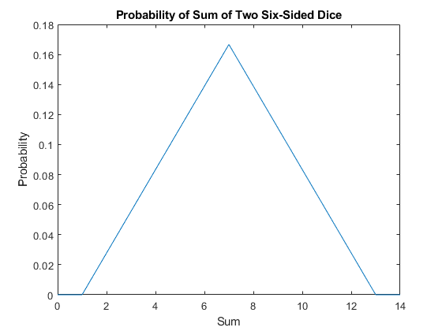
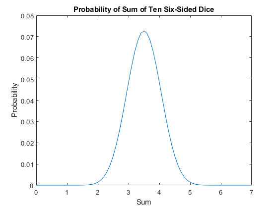
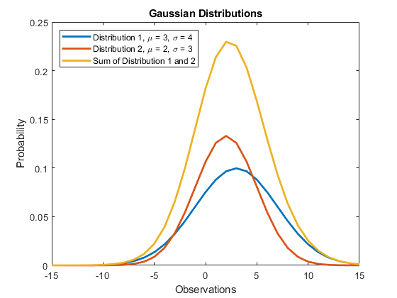

Homework 2
Contents
Problem 1
The probability of rolling snake eyes is given by the product of the probability of rolling a one on each die which is 1/36. The probability of rolling a sum of seven is 6/36 or 1/6. I arrived at this answer since the probability of rolling a sum of seven given the first dice already has a value is 1/36. There are six different ways to roll a sum of seven so 6*(1/36) is 6/36 or 1/6. This means it is more probable to roll a sum of seven than it is to roll snake eyes since 1/6 is greater than 1/36.
Problem 2
Analytic Method (Math and Counting) Shows the probability of rolling a certain sum using two dice. Also lists the possible outcomes to achieve that sum. Sum of 1: 0/36 {} Sum of 2: 1/36 {(1,1)} Sum of 3: 2/36 {(1,2),(2,1)} Sum of 4: 3/36 {(1,3),(2,2),(3,1)} Sum of 5: 4/36 {(1,4),(2,3),(3,2),(4,1)} Sum of 6: 5/36 {(1,5),(2,4),(3,3),(4,2),(5,1)} Sum of 7: 6/36 {(1,6),(2,5),(3,4),(4,3),(5,2),(6,1)} Sum of 8: 5/36 {(2,6),(3,5),(4,4),(5,3),(6,2)} Sum of 9: 4/36 {(3,6),(4,5),(5,4),(6,3)} Sum of 10: 3/36 {(4,6),(5,5),(6,4)} Sum of 11: 2/36 {(5,6),(6,5)} Sum of 12: 1/36 {(6,6)} Sum of 13: 0/36 {}
% Numeric Method (Computer Program) % This method performs a convolution on itself to show the probability of % two dice. The reason a convolution is performed on itself is because both % dice share the same probability of 1/6 since each value has an equal % probability to be rolled on a six-sided die. Here, we see the numeric % method is consistent with the probabilities calculated in the analytic % method section. probs = [0,1/6,1/6,1/6,1/6,1/6,1/6,0]; convu = conv(probs,probs); plot(0:length(convu)-1, convu); title("Probability of Sum of Two Six-Sided Dice"); xlabel("Sum"); ylabel("Probability"); figure;
Problem 3
Mean From the plot in the previous problem, the mean is 7. The mean is given by sum[x*f(x)] where f(x)=1/6 for all values since there is an equal chance to roll each value. The values of x are {1,2,3,4,5,6,1,2,3,4,5,6} which are all the values that can be rolled from two dice. So if we compute sum[x*f(x)], we get 1/6*sum(x)=42/6=7. This mathematical approach is consistent with the mean shown in the graph since mean is 7. Another thing to point out is the mean of one die is 3.5 so the mean of n die is simply n times 3.5. In this case, we have two dice so 2*3.5 = 7 which is consistent with the previous two methods.
x = [1,2,3,4,5,6,1,2,3,4,5,6]; mean = sum(x)/6; disp(mean); % Variance % The variance is given by sum[(x-mean)f(x)]. From the previous part, we % know f(x)=1/6 for all values since there is an equal chance to roll each % value. Also, the mean for one die is 3.5 and the values of x are % [1,2,3,4,5,6]. So if we compute the variance of one die, we get 2.196. % Now, if we want the variance of two dice, we simply multiple the variance % of one die by two which gives us a result of 5.833. This means you can % simply multiply n to the variance of one die to find the variance of n % die. This is because they are independent of one another. variance = 0; x = [1,2,3,4,5,6]; for c = 1:length(x) variance = variance+(x(1,c)-3.5)^2/6; end disp(2*variance);
7
5.8333
Problem 4
probs = [0,1/6,1/6,1/6,1/6,1/6,1/6,0]; convu = conv(probs,probs); for c = 1:8 convu = conv(convu,probs); end x = 0:length(convu)-1; plot(x/10, convu); title("Probability of Sum of Ten Six-Sided Dice"); xlabel("Sum"); ylabel("Probability"); figure; % According the Central Limit Theorem, most distributions when summed or % averaged over enough trials will converge to a Gaussian pdf. This can be % seen if we compare the pdf of the sum of two six-sided dice and that of % ten six-sided dice. The pdf with two dice has a very sharp % triangular-shaped graph but the pdf with ten dice has a smooth curve % which looks like a Gaussian distribution. From the shape of these two % pdfs, we can see how the Central Limit Theorem takes effect. Therefore, I % would say this is a Gaussian distribution.
Problem 5
This part shows that the sum of an initially Gaussian distribution is also a Gaussian distribution. This is shown by defining two Gaussian distributions "gdist1" and "gdist2" and a third Gaussian distribution "gidst3" which is the sum of the first two Gaussian distributions. I plot each of them on the same plot to show all three functions and how each have characteristics of a Gaussian distribution.
x = -15:15; gdist1 = makedist("Normal",'mu',3,'sigma',4); gdist2 = makedist("Normal",'mu',2,'sigma',3); gdist3 = pdf(gdist1,x)+pdf(gdist2,x); plot(x,pdf(gdist1,x),x,pdf(gdist2,x),x,gdist3,'LineWidth',2); title("Gaussian Distributions"); xlabel("Observations"); ylabel("Probability"); legend('Distribution 1, \mu = 3, \sigma = 4',... 'Distribution 2, \mu = 2, \sigma = 3',... 'Sum of Distribution 1 and 2', 'Location', 'Northwest'); % From the plot of Distribution 1, 2, and 3 (D1, D2, and D3 respectively), % we know the standard deviation of the resulting sum or average Gaussian % distribution changes. The standard deviation of D1 and D2 are 4 and 3 % respectively. In order to calculate the standard deviation of D3, we must % find the variance of D3 first since variance is equal to the square of % the standard deviation. So the variance of D3 is equal to the sum of the % variance of D1 and D2 which is 4^2 + 3^3 = 25. Now, the standard % deviation of D3 is 5. Thus, this shows how the standard deviation of the % resulting sum of Gaussian distributions changes. The average of D3 is % simply the sum of the averages of D1 and D2 which are 3 and 2 % respectively. So the average of D3 is 5. This means if we explore a % signal over a long period of time, we will expect the standard deviation % to increase which corresponds in a wider width in the Gaussian % distribution. This makes sense since we expect noise to affect our data.